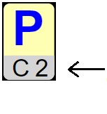

كلمة السر
اسحب الأوراق الى الأمكن الفرغة لصنع كلمت سر3 كلمات سر مكونة من 5 أورق لكل واحدة
:لكل كلمت سر
هو موقع الورقة الأولى A1
لا نقول لكم أين توجد الورقة الأولى
كل ورقة تدل على مكن الورقة التي تليهة
F3C6الورقة الأخيرة موجودة في الخنة
|  | مثال بعد هده الورقة يجب وضع والسطر 2 C الورقة الموجودة في العمود |